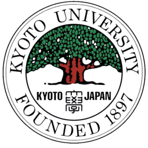

STT Terpadu Nurul Fikri
Pada tanggal 8 Februari 2021, STT Terpadu Nurul Fikri bekerjasama dengan kotakode.com. Kotakode.com adalah platform online untuk programmer Indonesia. STT Terpadu Nurul Fikri bekerjasama dengan Kota Kode untuk menyediakan jawaban kepada para mahasiswa STT Nurul Fikri atas pertanyaan pemrograman sehari-hari dan berbagi pengetahuan tentang dunia IT bersama ribuan programmer Indonesia lainnya yang selalu up to date dengan perkembangan dunia IT di Indonesia. Yang nantinya dapat membangun reputasi online dan nantinya bisa membantu karir Mahasiswa STT Nurul Fikri. Semua ini bisa dapatkan secara GRATIS! Selain itu, masih banyak keuntungan lain yang akan Mahasiswa STT Nurul Fikri didapatkan, seperti:
- Mendapatkan jawaban dari para profesional yang bekerja di perusahaan seperti Google, Gojek, Tokopedia, dll.
- Mendapatkan akses ke programming mentor.
- Menjadi bagian dari jaringan programmer profesional yang aktif dan terus berkembang di Indonesia.
Khusus untuk mahasiswa STT Terpadu Nurul Fikri, diberikan hal spesial bila sudah bergabung akan
mendapatkan EXCLUSIVE BADGE STT Terpadu Nurul Fikri
#berita #indonesia #info #kerjasama #KotaKode #kotakode.com #mahasiswa #mahasiswi #online #pemrograman
#platform #programmer #sttnf #teknologi
STT Terpadu Nurul Fikri Bekerjasama di Bidang Akademik dengan Asia e University
Senin (24/2), di ruang 207 Kampus B STT Terpadu Nurul Fikri. STT Terpadu Nurul Fikri menandatangani MoU
(Memorandum of Understanding) dengan Asia e University. MoU tersebut berkaitan dengan kerjasama di
bidang Akademik. Dari pihak STT Terpadu Nurul Fikri diwakili oleh Dr. Lukman Rosyidi, M.M., M.T dan Asia
e University diwakili oleh Professor Emeritus Dato' Dr. Hassan Said.
Asia e University merupakan Universitas Internasional yang berada di Kuala Lumpur, Malaysia. Kerjasama
tersebut mencakup pertukaran Pelajar, Dosen, atau kegiatan ilmiah lainnya seperti konferensi/penelitian.
Hal ini menjadi sebuah peluang yang harus dimanfaatkan dengan baik.
Asia e University juga menawarkan program kuliah double degree yaitu dengan menyelenggarakan kuliah
online sehingga mahasiswa tidak harus hadir dan bertatap muka dengan dosen. Program bertujuan memberi
kemudahan dalam menyelesaikan kuliah namun dengan tetap memperhatikan kualitas pembelajaran.
Kerjasama ini tidak berhenti pada tandatangan semata, akan tetapi terus dirumuskan apa saja yang perlu
dikembangkan dan dapat diimplementasikan oleh para dosen dan mahasiswa, seperti melakukan penelitian
bersama, dan pertukaran mahasiswa dan dosen.
Berdasarkan MoU yang tertulis Asia e University Malaysia siap memfasilitasi Mahasiswa, Dosen, dan
civitas akademika STT Terpadu Nurul Fikri untuk bisa mengikuti program-program Internasional Perguruan
Tinggi begitu juga sebaliknya.
Program pendidikan yang dibuka dalam kerjasama STT Terpadu Nurul Fikri dengan Asia e University
diantaranya:
- Doctor of Philoshopy
- Master in Information and Communication Technology Management
- Master in Business Administration
- Master in Management
- Master in Education
- Bachelor in Information and Communication Technology Management
- Bachelor of Digital Creative Media
- Bachelor of Business of Administration
- Bachelor of Graphic Design
- Bachelor of Education
- Programmes of Mutual Interest
Harapannya, kerjasama yang dilakukan oleh STT Terpadu Nurul Fikri dengan Asia e University ini dapat memberikan wawasan yang luas bagi para Mahasiswa STT Terpadu Nurul Fikri, pengalaman belajar di luar negeri yang akan memberikan sebuah pelajaran baru, dan dapat melahirkan lulusan yang berkualitas dan bisa bersaing di dunia Internasional.
#akademik #asia #internasional #kerjasama #MoU #penandatanganan #sttnf university
Kerjasama Sekolah Tinggi Teknologi Terpadu Nurul Fikri dengan Kyoto University
Tepat pada tanggal 25 September 2017 STT NF melakukan penandatanganan kerjasama (MoU) dengan
Laboratorium Physical Statistic Kyoto University terkait kolaborasi pendidikan yang meliputi kerjasama
riset, pertukaran informasi pendidikan, dsb. Profesor Umeno sebagai Kepala Laboratorium Physical
Statistic mengatakan bahwa perkembangan ilmu pengetahuan tidak dibatasi oleh batas batas negara.
Siapapun yang punya mimpi bisa mewujudkan mimpinya jika konsisten dalam kerangka pengembangan iptek.
Menurut beliau, di Jepang 13 tahun yang lalu social media belum banyak seperti sekarang, tapi ada
aplikasi sosial media yang disebut Mixi, yang ternyata dibuat pelajar indonesia di jepang, sehingga
social media Mixi pernah menjadi terpopuler di Jepang. Sosial media yang terbesar di Jepang itu berkat
iptek. Ini merupakan contoh bahwa dengan iptek dan mimpi yang besar, batas-batas negara, batas-batas
pendidikan, budaya, dsb bukan menjadi penghalang untuk menjadi lebih maju. Prof. Umeno mengatakan
kerjasama dengan Sekolah Tinggi Teknologi Terpadu Nurul Fikri diharapkan dapat menjadi titik awal kedua
pihak untuk lebih mengembangkan potensi dan mimpi bukan hanya untuk kedua institusi tapi bagi kedua
negara.
Dr. Rudi Lumanto, Ketua Yayasan Nurul Fikri dalam sambutannya mengatakan bahwa kerjasama dan kolaborasi
adalah sesuatu yang tidak bisa ditinggalkan di era sekarang. Dengan kolaborasi maka cara pandang akan
semakin luas, kemampuan memecahkan masalah menjadi semakin cepat dan akurat. Sekolah Tinggi Teknologi
Terpadu Nurul Fikri yang unggul dalam riset dan pengembangan bidang aplikasi mobile sangat berbangga
bisa melakukan kerjasama dengan Kyoto University.
STT Terpadu Nurul Fikri dan Telkom Tanda Tangani Perjanjian Kerjasama

Senin (5/6/2017), STT Terpadu Nurul Fikri (STT NF) menandatangani perjanjian kerjasama dengan PT. Telekomunikasi Indonesia, Tbk. (Telkom) di Auditorium Kampus B II STT Terpadu Nurul Fikri di Jl. Lenteng Agung Raya No. 20 Jakarta Selatan. Penandatanganan kerjasama ini dilakukan oleh Ketua STT Terpadu Nurul Fikri, AHADIYAT, M.M dan Executive General Manager Divisi Digital Service PT Telkom, ARIEF MUSTA'IN. Dalam perjanjian tersebut kedua belah pihak sepakat untuk melaksanakan kerjasama penyelenggaraan program Internship bagi Mahasiswa/Mahasiswi STT NF di TELKOM. Perjanjian ini dimaksudkan sebagai dasar pelaksanaan kerjasama diantara Para Pihak dalam penyelenggaraan program Internship. Kerjasama dimaksud Perjanjian ini bertujuan untuk menjalin kerjasama diantara Para Pihak untuk saling mendukung program dan mengoptimalkan resource yang dimiliki masing-masing Pihak diantaranya sebagai berikut:
- Memberikan kesempatan bagi Mahasiswa/Mahasiswi STT NF untuk magang di TELKOM.
- Pemenuhan SDM bagi TELKOM dalam rangka mendukung pelasanaan pekerjaan oleh Mahasiswa/Mahasiswi STT NF yang magang.
Program Internship atau Magang merupakan bagian dari pelatihan kerja bagi mahasiswa atau Mahasiswi STT NF tingkat akhir sebagai salah satu syarat untuk menyelesaikan proses pendidikan. Pada kesempatan yang sama Bpk. ARIEF MUSTA'IN juga memberikan Kuliah Umum untuk Mahasiswa dan Mahasiswi STT NF dengan bertemakan “Penguatan Skill dan Pengalaman lewat Program Internship Telkom".
Penandatanganan Kerjasama PT MMI - STTNF

Tepat pada hari kamis tanggal 14 Agustus 2014 jam 14.00 telah ditandatangani kesepakatan kerjasama
antara PT Mitra mandiri Informatika dengan sekolah Tinggi Teknologi Terpadu Nurul Fikri untuk Training
dan Magang Kerja. Training dan Magang kerja yang akan dilaksanakan adalah bidang programming Java.
Penadatangan Kerjasama Training dan Magang Kerja dari pihak STT-NF diwakili oleh Ketua Sekolah Tinggi
Teknologi terpadu Nurul Fikri Bapak Drs. Rusmanto, MM, sedangkan dari Pihak PT Mitra Mandiri Informatika
diwakili oleh Ibu Sri Budi Hidayati. Dengan ditandatangani kesepakatan kerjasama oleh kedua belah pihak
ini maka masing-masing pihak sudah bisa melaksanakan kewajibannya masing-masing.
Melalui Pusat pengembangan karir atau dikenalnya dengan CDC STT-NF, Sekolah Tinggi Teknologi Terpadu
Nurul Fikri telah meluncurkan Program Pelatihan siap kerja yang dinamakan Program Link Match. Program
Link Match sudah berjalan 3 angkatan, dan ketiga angkatan tersebut materinya Programing Web. Untuk
angkatan ke 4 ini yang agak berbeda karena materinya adalah Java. Cukup berat dari sisi materi karena
tidak banyak kampus yang mengajarkan materi Java.
Walapun penandatangan kerjasama Training dan Magang ditanda tangani tanggal 14 Agustus 2014 namun
rekrutmen peserta sudah dimulai sejak tanggal 4 Agustus 2014. Sudah ada beberapa peserta yang wawancara
dan tes di STT-NF, yang selanjutnya nanti akan diwawancara berikutnya oleh Perusahaan jika dinyatakan
lolos di tes dan wawancara tahap pertama oleh pihak STT-NF.
Harapan kami dari STT-NF dengan dibukanya Program Link Match Angkatan ke 4 ini mampu memberikan
kesempatan kepada lulusan SMK, D3 dan S1 yang belum bekerja dan memiliki semangat belajar yang baik.
Karena dengan peningkatan pengangguran terdidik menunjukan bahwa ketiak mereka lulus belum bisa langsung
terjun di dunia kerja dan usaha. Mereka masih butuh pembekalan skill teknis, agar mampu bersaing di
dunia kerja terutama bidang Komputer yang terus berkembang. Jika perguruan tinggi atau sekolah tidak
mengikuti perkembangan yang ada maka lulusannya tidak siap untuk bekerja karena kebutuhan dengan hasil
lulusan tidak matching.
Semoga kerjasama antara PT MMI (Mitra mandiri Informatika) dengan STT-NF mampu menghasilkan
tenaga-tenaga kerja yang handal dan siap bekerja di bidang Teknik Informatika. Selamat dan Sukses buat
STT-NF, teruslah berkarya dan Berjuang untuk kemajuan bangsa.
STT Terpadu Nurul Fikri Jalin Mou dengan Sun Moon University Korea

Untuk meningkatkan kualitas dari pada lulusan STT Terpadu Nurul Fikri, maka STT Terpadu Nurul Fikri
mengadakan kerjasama dengan Sun Moon University, Korea Selatan. Penanda tanganan kerjasama ini
dilaksanakan pada hari Jum'at, Tanggal 23 Oktober 2015 di Padang pada acara RAKORNAS APTIKOM 2015.
Kerjasama ini ditandatangani langsung oleh AHADIYAT, M.M selaku ketua STT Terpadu Nurul Fikri dengan Dr.
Kyung Oh Lee, Ph.D selaku Dekan, Internasional Affairs Sun Moon University, Korea Selatan.
Pada nota kesepahaman ini akan dilakukan :
- Pengembangan program bersama.
- Pertukaran kredit.
- Pertukaran pascasarjana dan mahasiswa sarjana untuk studi lanjut dan penelitian.
- Pertukaran dosen dan peneliti untuk penelitian, kuliah dan group diskusi.
- Pertukaran informasi termasuk pertukaran bahasa pustaka dan publikasi penelitian.
- Bersama konferensi, seminar dan lokakarya.
- Kegiatan mahasiswa bersama.
- Penggunaan bersama peralatan, fasilitas dan sumber daya.
Kerjasama Library STT Nurul Fikri bersama dengan NELITI (Repositori Ilmiah Indonesia)
Jakarta Pusat - Dalam rangka mendukung tridharma (pengajaran, penelitian, dan pengabdian masyarakat)
perguruan tinggi, perpustakaan STT Terpadu Nurul Fikri secara aktif mengembangkan informasi yang
dihimpunnya bagi civitas akademika. Bertempat di perpustakaan nasional Republik Indonesia 5 September
2018, perpustakaan STT Terpadu Nurul Fikri telah mengadakan diskusi dan kerjasama dalam bidang
penyediaan sumber informasi ilmiah dengan neliti.
Anton sebagai CEO mengatakan bahwa repositori ini dibuat untuk menghimpun seluruh artikel penelitian
ilmiah dengan harapan peneliti dapat dengan mudah mendapatkan artikel ilmiah yang dibutuhkannya. “Untuk
ke depannya neliti akan menyediakan repositori khusus bagi pustakawan atau organisasi yang ingin
menghimpun informasinya. Repositori ini masih tahap pengembangan.” imbuhnya.
Bagi perpustakaan diskusi dan kerjasama ini sangat bermanfaat sekali sebagai pintu gerbang gerakan
penelitian ilmiah khususnya di kalangan STT Terpadu Nurul Fikri. Harapan dengan adanya kerjasama ini
perpustakaan STT Terpadu Nurul Fikri semakin aktif menyediakan informasi ilmiah serta mendukung secara
penuh tridharma perguruan tinggi di STT Terpadu Nurul Fikri.
STT Terpadu Nurul Fikri Bekerjasama dengan Oracle Academy
STT Terpadu Nurul Fikri telah bekerjasama dengan Oracle Academy. Tujuan diadakannya kerja sama dengan
Oracle Academy adalah agar para lulusan Teknik Informatika STT Mandala mendapatkan skill/keahlian yang
terkait dengan Database Management, Database Programming, Java Programming dan mengikuti perkembangan
teknologi, khususnya untuk produk yang dikeluarkan oleh Oracle, dan mendapatkan sertifikasi di bidang
ini.
Kegiatan kerja sama dimulai dengan memadukan kurikulum mata kuliah dengan kurikulum dari Oracle Academy.
Para mahasiswa yang mengambil kuliah yang terkait dan memenuhi syarat kelulusan yang telah ditetapkan,
akan mendapatkan nilai pada matakuliah ini dan sertifikat dari Oracle Academy. Sertifikat dari Oracle
Academy sudah diakui oleh perusahaan-perusahaan yang merekrut lulusan Ilmu Komputer.
5 Alasan untuk sertifikasi Oracle :
- SKILL. Mendapatkan penguasaan kompetensi berstandar Internasional.
- KARIR. Bergabung dengan para pemegang sertifikasi Oracle yang telah mendapatkan promosi kenaikan gaji atau peningkatan karir yang signifikan.
- NETWORK. Belajar dari Tim yang terlibat langsung dalam Oracle Project.
- FLEKSIBEL. Belajar dari mana saja dan kapan saja.
- GARANSI. Lebih dari 99% peserta training Oracle menyatakan puas.
Dengan memiliki sertifikasi Oracle, maka bargaining power di pasar kerja juga akan makin tinggi. Dengan pengetahuan dan pengalaman yang sama, pemegang sertifikat mempunyai lebih banyak peluang untuk mendapatkan pekerjaan.
- Link Berita Terbaru
- Nurul Fikri Bekerja sama dengan Kota Kode
- Nurul Fikri menandatangani MoU dengan Asia e University
- Nurul Fikri menandatangani MoU dengan Kyoto University
- Nurul Fikri Bekerja sama dengan Telkom Indonesia
- Nurul Fikri Bekerja sama dengan MMI
- Nurul Fikri menandatangani MoU dengan Sun Moon University
- Nurul Fikri Bekerja sama dengan Neliti
- Nurul Fikri Bekerja sama dengan Oracle Academy